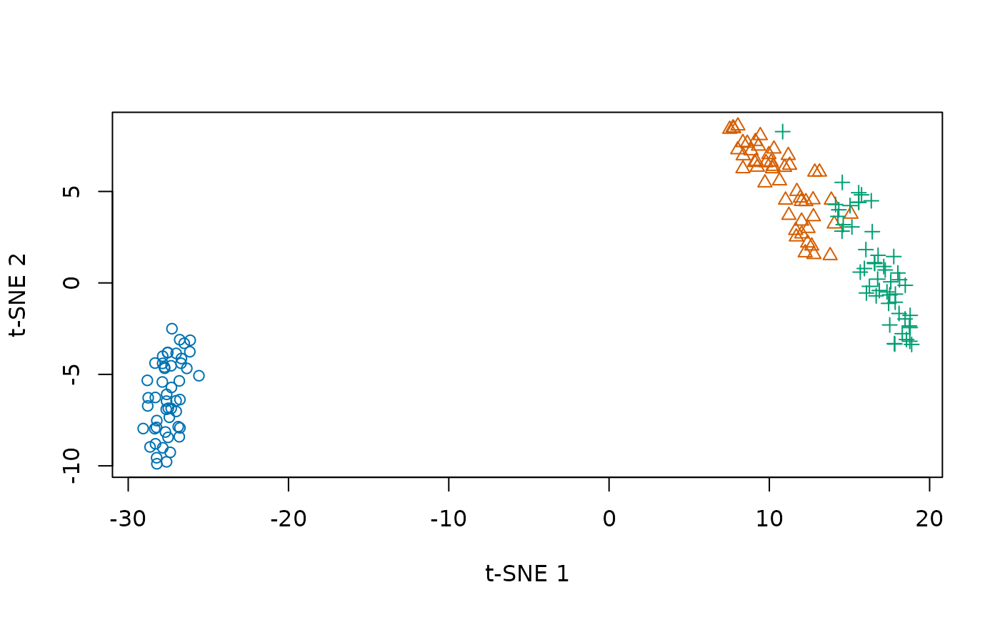

smallvis lets you experiment with neighborhood embedding
methods, including t-SNE and the LargeVis and UMAP cost functions. You
can change the input scaling, affinities, initialization, and optimizer
independently. Most methods use quadratic time and memory and suit small
datasets; Barnes-Hut t-SNE provides an
approximate route for larger inputs.
Install
The package lives in the smallvis subdirectory of the
repository. Install it and its dependencies, including the GitHub
plotting package vizier, with:
install.packages("pak")
pak::pak("jlmelville/smallvis/smallvis")Installation from source requires an R-compatible C++ toolchain, such as Rtools on Windows.
Make an embedding
smallvis() selects the numeric columns of a data frame,
so the species column in iris stays out of the calculation.
Here t-SNE starts from scaled PCA coordinates and returns a two-column
matrix. Plotting during optimization is disabled so that the example
also works in scripts.
library(smallvis)
embedding <- smallvis(
iris,
Y_init = "spca",
perplexity = 30,
epoch_callback = FALSE,
n_threads = 1,
verbose = FALSE
)
dim(embedding)## [1] 150 2
species <- as.integer(iris$Species)
plot(
embedding,
col = c("#0072B2", "#D55E00", "#009E73")[species],
pch = species,
xlab = "t-SNE 1",
ylab = "t-SNE 2"
)
The coordinates describe a neighborhood embedding: nearby points are the relationships the method tries to preserve. The perplexity experiments show how changing the neighborhood size changes the picture.
Inspect the result
Set ret_extra = TRUE to return a list containing the
coordinates in Y, final objective contributions in
costs, and an optimization history in
itercosts.
fit <- smallvis(
iris,
Y_init = "spca",
perplexity = 30,
ret_extra = TRUE,
epoch_callback = FALSE,
n_threads = 1,
verbose = FALSE
)
c(iterations = fit$iter, final_cost = sum(fit$costs))## iterations final_cost
## 1000.0000000 0.1231099The final cost is evaluated at the returned coordinates after removing exaggeration. Values in the history were recorded during optimization and can include exaggeration. The function reference describes the available diagnostics, including optional matrices that can be expensive to calculate or retain.
Plot during optimization
The default epoch_callback = TRUE uses
vizier to plot progress. You can also supply your own
callback. This example colors points by species and puts the iteration
number in the title:
iris_plot <- function(Y, iter, cost = NULL) {
plot(Y, col = as.integer(iris$Species), main = paste("Iteration", iter))
}
smallvis(iris, Y_init = "spca", epoch_callback = iris_plot)Where next?
- Inputs and initialization: scaling, PCA, distance inputs, and starting coordinates.
- Optimization and repeated runs: methods, optimizers, exaggeration, and selecting among random starts.
- Barnes-Hut and native acceleration: approximate t-SNE and thread controls.
- Theory and experiments: explanations and comparisons behind the package.
- About smallvis: motivation and earlier development notes.